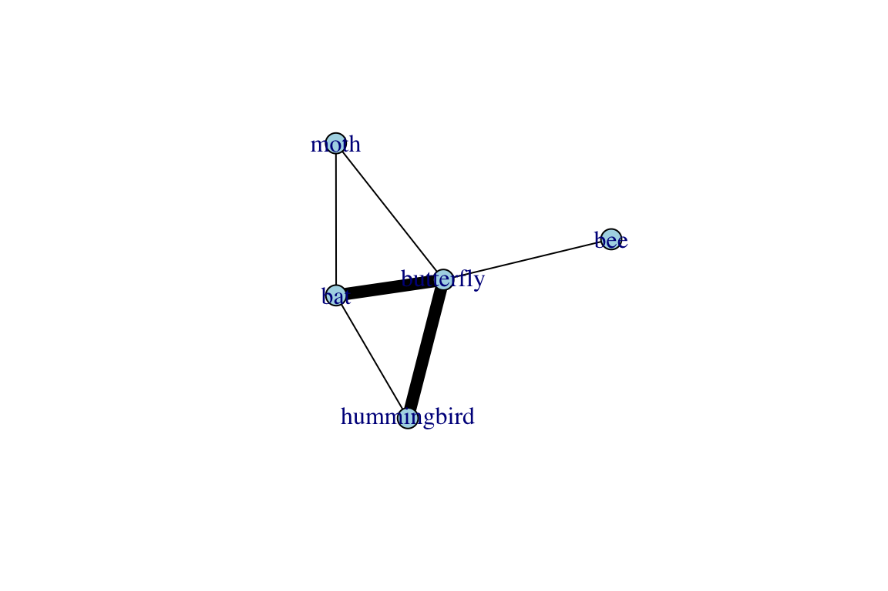

4.2 Intro to Ecological Networks
Dai Shizuka
7/10/2018
ecological networks
4.2.1 Species Co-occurrence Networks
4.2.2 Bipartite Networks (e.g., Mutualism, etc)
.3.1 Intro to bipartite networks Bipartite network, or two-mode network, is a special type of network in which there are two kinds of nodes, and only nodes of different type are connected. In this case, the data is often organized as a ‘biadjacency matrix’, in which rows and columns are two different types of nodes. For example, let’s take a hypothetical dataset on plant-pollinator interactions. The following interaction matrix describes which animal pollinates which plant: cell value is 1 if there is an interaction and 0 if not.
| Hummingbird | Bat | Moth | Butterfly | Bee | |
|---|---|---|---|---|---|
| Plant 1 | 1 | 1 | 0 | 1 | 0 |
| Plant 2 | 1 | 0 | 0 | 1 | 0 |
| Plant 3 | 0 | 1 | 1 | 1 | 0 |
| Plant 4 | 0 | 0 | 0 | 1 | 1 |
You can see that this can be expressed as as bipartite network in which plant species are one type of node (e.g., black squares) and pollinator species are another type of node (e.g., white circles). These types of networks are called mutualism networks, and constitute one type of ecological network. A two-trophic food web can be considered a bipartite network, although food webs in general can take more complex forms (multiple trophic levels, intraguild predation, etc.). Intuitively sexual networks, i.e., a network of social or genetic mates, can also be considered a bipartite network consisting of male and female nodes.
Working with bipartite networks in R
Let’s now try playing around with this type of data in R. We will start by using the igraph package. First, we will read the sample data into R. The file Sample_bipartite.csv is the plant-pollinator interaction matrix as presented above:
bmat=as.matrix(read.csv("https://dshizuka.github.io/networkanalysis/SampleData/Sample_bipartite.csv", header=T, row.names=1))## Warning in read.table(file = file, header = header, sep = sep, quote
## = quote, : incomplete final line found by readTableHeader on 'https://
## dshizuka.github.io/networkanalysis/SampleData/Sample_bipartite.csv'bmat## hummingbird bat moth butterfly bee
## Plant_1 1 1 0 1 0
## Plant_2 1 0 0 1 0
## Plant_3 0 1 1 1 0
## Plant_4 0 0 0 1 1To read this interaction matrix into an igraph object called bg, we will use the function graph_from_incidence_matrix().
library(igraph)
bg=graph_from_incidence_matrix(bmat)
bg## IGRAPH d51aa2d UN-B 9 10 --
## + attr: type (v/l), name (v/c)
## + edges from d51aa2d (vertex names):
## [1] Plant_1--hummingbird Plant_1--bat Plant_1--butterfly
## [4] Plant_2--hummingbird Plant_2--butterfly Plant_3--bat
## [7] Plant_3--moth Plant_3--butterfly Plant_4--butterfly
## [10] Plant_4--beeHere, the first line of information for object bg tells us that we have an Undirected, Named network that is Bipartite, and it has 9 nodes and 10 edges. The second line of information tells that there are two vertex attributes: vertex type and vertex name. The rest of the lines show us the edges that exist.
Now let’s take a moment to learn how to deal with the vertex attribute called “type”. You will see that this attribute is coded as TRUE/FALSE, but you can convert this into numbers (output not shown).
V(bg)$type #Display the vertex types. They are "FALSE" or "TRUE"## [1] FALSE FALSE FALSE FALSE TRUE TRUE TRUE TRUE TRUEV(bg)$type+1 #If you add 1 to FALSE/TRUE vector in R, they convert to 1 and 2, respectively.## [1] 1 1 1 1 2 2 2 2 2Then, you can use this to assign vertex shapes and colors.
V(bg)$shape=c("square","circle")[V(bg)$type+1]# you can assign vertex shapes this way
V(bg)$color=c("tomato","lightblue")[V(bg)$type+1] # assign colors the same way
plot(bg) igraph also includes a ‘bipartite layout’, in which the two node types are arranged in two rows.
plot(bg, layout=layout_as_bipartite(bg), edge.color="black", edge.width=4,vertex.label.dist=1, vertex.label.degree=c(rep(-pi/2, 4), rep(pi/2, 5)))
The ‘bipartite’ package also has plotting function that produces a prettier version of this:
library(bipartite)
plotweb(bmat) #the base function for bipartite network plotor,
plotweb(bmat, method="normal",ybig=0.1, col.interaction="wheat2", bor.col.interaction="white", arrow="no", col.high="lightblue", col.low="tomato",labsize=2, adj.low=c(0.5,0.8), adj.high=c(0.5,0))Bipartite projections
Sometimes, you are only interested in the relationships between one type of node: e.g., Which pollinators compete over the same nectar sources? Which males compete over the same females? In such cases, we are interested in what is called a one-mode projection of the bipartite network. For example, Hummingbird, Bat and Butterfly would be connected because they all pollinate Plant 1, whereas Bee and Butterfly would be connected because they are both pollinate Plant 4; so on and so forth.
Note that we can make bipartite projections in two directions: we can make: (1) one-mode network of plants by shared pollinators, or (2) one-mode network of pollinators by shared plants. We can make both of these using a single function in igraph called bipartite_projection().
proj=bipartite_projection(bg, multiplicity = T)
proj## $proj1
## IGRAPH bd0d073 UNW- 4 6 --
## + attr: name (v/c), shape (v/c), color (v/c), weight (e/n)
## + edges from bd0d073 (vertex names):
## [1] Plant_1--Plant_2 Plant_1--Plant_3 Plant_1--Plant_4 Plant_2--Plant_3
## [5] Plant_2--Plant_4 Plant_3--Plant_4
##
## $proj2
## IGRAPH 6eb3968 UNW- 5 6 --
## + attr: name (v/c), shape (v/c), color (v/c), weight (e/n)
## + edges from 6eb3968 (vertex names):
## [1] hummingbird--bat hummingbird--butterfly bat --butterfly
## [4] bat --moth moth --butterfly butterfly --beeThis new object, called proj, is in a format called list [you can see this by running class(proj)]. A list is an object that has multiple components—in this case, proj is a list with two distinct graphs: (1) proj$proj1 (or alternatively, proj[[1]]) is a network with 4 nodes and 6 edges. (2) proj$proj2 (or alternatively, proj[[2]]) is also a network with 5 nodes and 6 edges. You’ll get a better sense of these projections if you plot them:
set.seed(2)
plot(proj$proj1, edge.color="black", edge.width=E(proj$proj1)$weight^3)plot(proj$proj2, edge.color="black", edge.width=E(proj$proj2)$weight^3)
What is a bipartite projection anyway?
Although I’ve presented the bipartite projection using a canned function in igraph, so let’s explain it briefly here. Mathematically, the adjacency matrices of the bipartite projection is the matrix product of the interaction matrix and its transpose. That is:
Projection 1 = \(\mathbf{A} \cdot \mathbf{A}^T\)
Projection 2 = \(\mathbf{A}^T \cdot \mathbf{A}\)
proj1=bmat%*%t(bmat) # %*% is matrix multiplication and t() is transpose of the matrix
proj2=t(bmat)%*%bmat
proj1## Plant_1 Plant_2 Plant_3 Plant_4
## Plant_1 3 2 2 1
## Plant_2 2 2 1 1
## Plant_3 2 1 3 1
## Plant_4 1 1 1 2proj2## hummingbird bat moth butterfly bee
## hummingbird 2 1 0 2 0
## bat 1 2 1 2 0
## moth 0 1 1 1 0
## butterfly 2 2 1 4 1
## bee 0 0 0 1 1Here, one thing to note is that the diagonal of the matrix represents the number of times each plant or pollinator interacts. We may want to ignore this when plotting the networks. These codes should produce the same as the plots above (outputs not shown):
set.seed(2)
pg1=graph_from_adjacency_matrix(proj1, mode="undirected",diag=F, weighted=T)
pg2=graph_from_adjacency_matrix(proj2, mode="undirected",diag=F, weighted=T)
plot(pg1, vertex.color="tomato", vertex.shape="square", edge.color="black",edge.width=E(pg1)$weight^3)
plot(pg2, vertex.color="lightblue", vertex.shape="circle", edge.color="black",edge.width=E(pg1)$weight^3)